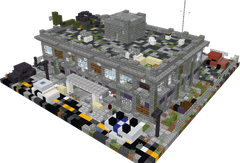
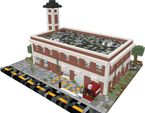
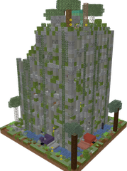
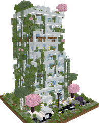

WIKI
WIKI
Towns & lairs
Five kinds of towns and eight boss lairs are scattered across the world, each with its own buildings, loot and dangers. Your Zombie Guidebook is also a radio that leads you to them.
The guidebook radio

The action bar, as you walk
Hold the Zombie Guidebook in your main hand: the compass on its cover points to the nearest town or boss lair you have not discovered yet, and the action bar shows the signal, its name and the distance. A distress drop takes over the compass for 10 minutes.
The closer you get, the more bars light up: 4 bars under 250 m, 3 under 600 m, 2 under 1000 m, 1 beyond. "Weak signal" with a distance: the radio hears a town there but does not know which one yet.
Walk within 72 blocks of its centre. The monitor next to your left hand shows TOWN DISCOVERED with the name of the town, with a little jingle.
A lair shows in red on the action bar: BOSS, the name of its boss and the distance. Come close and the action bar names the lair. Once its boss falls, the radio skips it until the boss is back.
Right after a discovery the radio loses the signal for about 3 minutes: the needle spins and the bar shows "Weak signal". Then it points to the next town you have not found yet.
The 5 towns
Each town only appears in the biomes that suit it. Below each one: the screen your monitor shows when you discover it.

Haven Hill
In plains, forests
A walled settlement on the hills, and the only safe place: council house, infirmary, workshop, pantry and houses behind the palisade. Its townsfolk and the 8 traders live here.


Ashford
In plains, savanna
The ruins of a city: an abandoned apartment building, a police station and a looted supermarket.


Pinecrest
In taiga, forests
A village in the pines with its fire station, a roadside motel and a school.


Greywater
In swamps, jungles
A flooded town where nature took over: overgrown towers of 6 and 8 floors and an old gas station.


Verdance
In forests, plains
A modern town: a 10 floor white tower, a museum and an airfield hangar.

Haven Hill, the safe town
No zombie appears inside Haven Hill by day: the townsfolk stroll in the streets, and the 8 traders run the market. Talk to a townsfolk: a few words and 1 scrap, once a day.
At night a group of 2 to 4 zombies of the same kind gathers outside the walls and heads for the town about every 2 to 3 minutes. The watch bell rings: zombies at the walls!
The townsfolk fight back with bats, golf clubs, pans and shovels. Knocked down, they wait for you: sneak next to them to get them back up. A survivor who had to flee is replaced by a newcomer the next morning.
Life in town
Zombies come out on their own, more at night. Inside a town up to 10 roam around you by day and 18 at night (4 and 10 in the wild). Town zombies like Riot Cops, Firefighters and Mailmen are twice as common there, and the elite Tanks only walk the streets of a town at night.
Loot chests, searchable trash cans, boxes and bags (they restock after 5 minutes) and furniture in every house.
Zombies climb out of the manholes in the streets while you are around, and a manhole cannot be broken. Right click one with duct tape to seal it for good.
In the ruins of the other towns, a few survivors hide. The zombies leave them alone. Find them: a few words and 1 scrap, once a day.
The tall buildings have elevator pads: jump to go up, sneak to go down, right click for the list of floors. Zombies cannot use them.
The 8 boss lairs
Each of the 8 bosses waits in its own lair. Step onto the arena floor (in Survival) and it wakes up in front of you, its name on your screen, with its team and its boss bar.


A boss never leaves its arena: if it strays too far, it is pulled back to its spot.
When every player has been gone (48 blocks away) for 30 seconds, the boss and the zombies it called vanish. It comes back at full health next time.
Once the boss falls, its lair stays cleared for 3 in-game days for everyone. Then it is back.
Every player who hurt it gets their own loot, straight in the inventory (see each boss page).